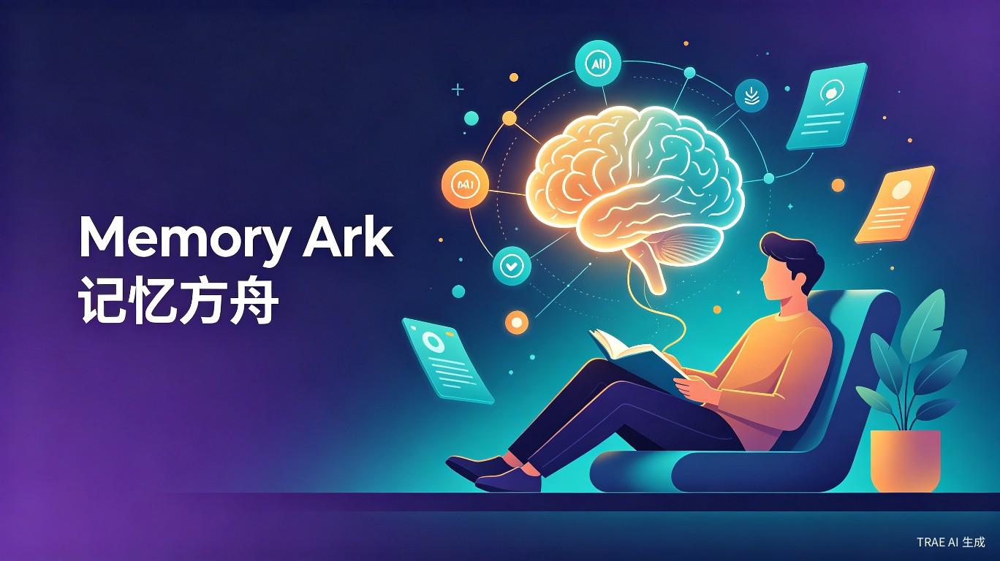
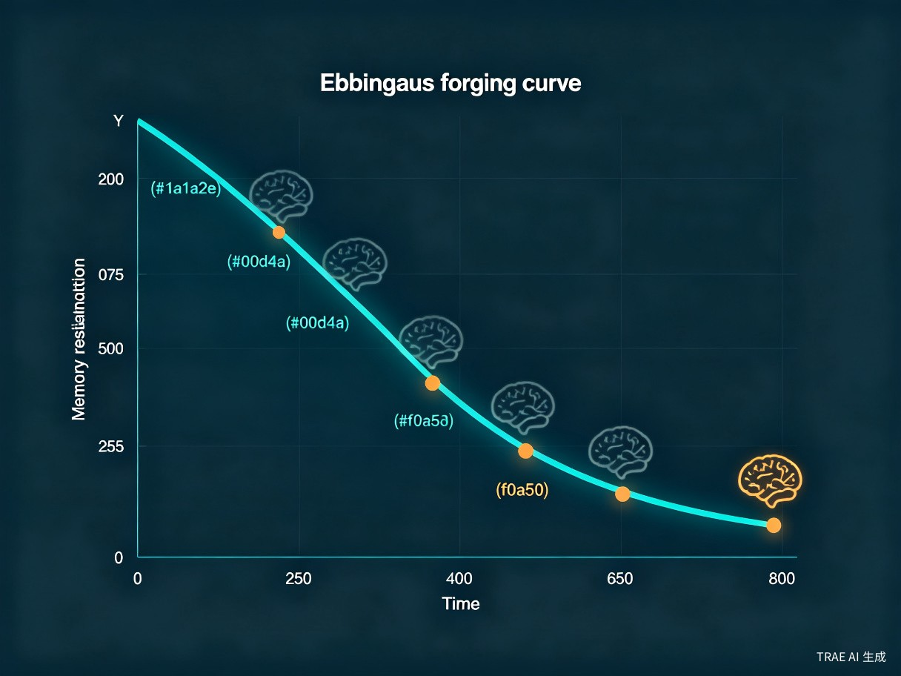
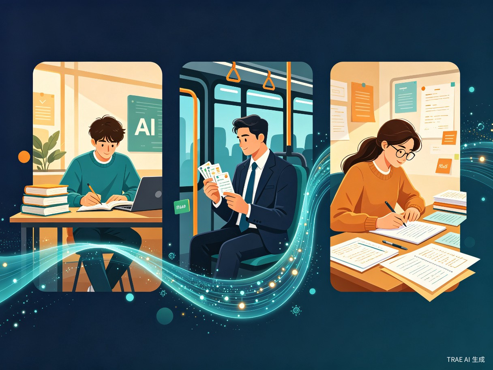
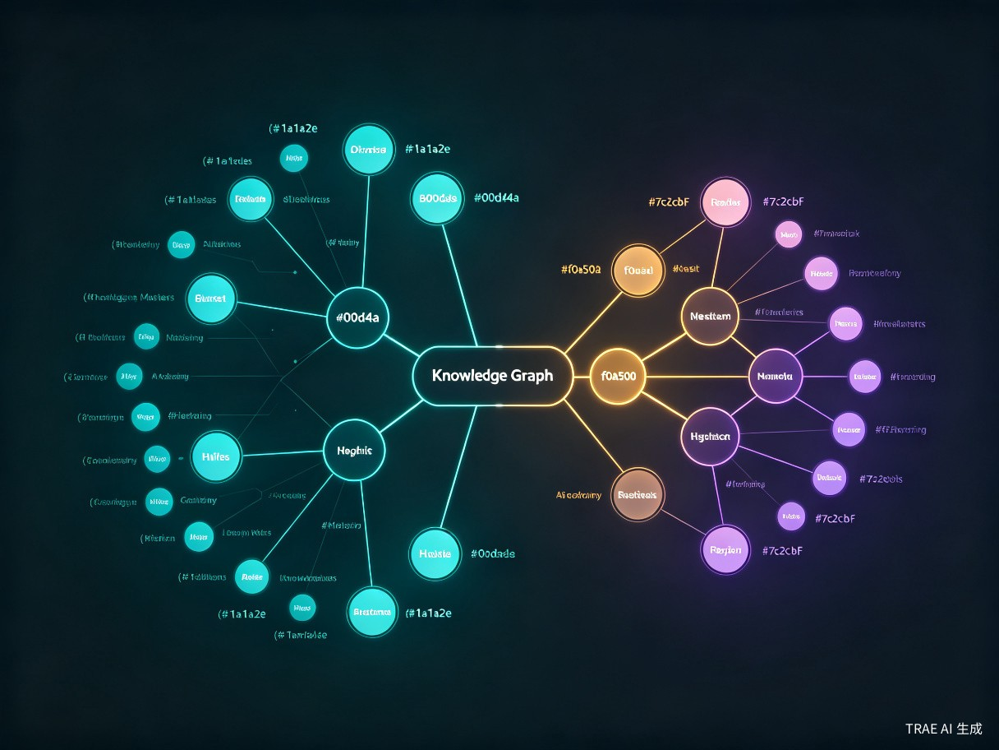

AI驱动的"一证永证"学习陪伴助手 —— 让每一次学习都不再被遗忘，用AI构建你的终身知识体系
核心洞察：人类在学习新知识后，1小时内遗忘56%，1天后遗忘66%，1个月后遗忘79%。传统笔记工具只负责"存储"，却无法解决"遗忘"这一根本问题。记忆方舟让AI成为你的私人记忆教练，实现"一证永证"。
学习最大的痛点不是学不会，而是学了就忘。传统笔记和复习方式依赖个人自觉性，知识碎片化散落各处，复习节奏不科学，导致大量学习投入被时间"稀释"，最终形成"学了等于白学"的恶性循环。用户花费大量时间学习编程、外语、专业知识，但过几个月就忘得一干二净。
灵感来源于真实的学习经历 —— 花大量时间学编程、学英语、学专业知识，过几个月就忘得一干二净。现有的笔记工具只是"存储"，没有"管理记忆"的能力。如果能用AI像私人教练一样跟踪学习轨迹、科学安排复习、自动串联知识，学习效果将发生质变。
一款基于AI的学习陪伴App / 小程序，核心功能包括学习过程自动记录、基于艾宾浩斯遗忘曲线的智能复习计划、以及AI知识图谱自动构建。帮助用户构建知识体系，规划学习路线，智能安排复习计划增强记忆。
笔记散落在各处，学过的内容无法系统关联，形成一座座"知识孤岛"，无法形成完整的知识体系。
复习计划全靠自律和记忆，不知道该在什么时候复习什么内容，往往在遗忘临界点错失最佳巩固时机。
没有科学复习策略，大量学习投入被时间稀释，投入产出比极低，学习动力逐渐丧失。
手动整理笔记、归纳知识点、建立关联需要大量时间精力，大多数人无法坚持，最终放弃知识管理。

面对多门课程、考试周压力，需要高效管理和复习大量学科知识，避免考前突击。
利用业余时间学习新技能、考取证书，时间碎片化，需要AI辅助最大化学习效率。
PMP、CPA、法考等高难度考试，知识点密集，需要系统化复习计划和知识图谱辅助。
持续学习各类知识，希望构建个人知识库，实现跨领域知识的融会贯通。
阅读文章、看视频课程、做项目练习时，一键记录学习内容和心得，AI自动提取关键知识点并生成摘要。
通勤、排队时打开App，AI推送精准复习任务，在最需要巩固的时间点进行高效复习。
通过知识图谱快速回顾全量知识点，AI自动识别薄弱环节，查漏补缺，精准突破。
设定学习目标（如"3个月通过PMP"），AI自动拆解学习路径，安排每日学习任务和复习计划。

支持文本、图片、语音、链接等多种输入方式，AI自动提取关键知识点、生成学习摘要。无需手动整理，学习即记录，实现"一证永证"——学过的内容永远不丢失。
基于艾宾浩斯遗忘曲线和用户对每个知识点的掌握程度，动态计算最优复习间隔。在记忆即将衰减的临界点精准推送复习任务，让每一分钟复习都花在刀刃上。
自动分析所有学习内容，识别知识点之间的关联关系，生成可视化的知识网络图。支持一键跳转关联内容，从零散知识中自动归纳出体系化的知识结构。
根据用户设定的学习目标，AI自动拆解学习路径，安排每日学习任务。结合复习引擎，智能平衡"新知识学习"与"旧知识巩固"的时间分配。

| 维度 | 传统笔记工具 | 背单词App | 记忆方舟 |
|---|---|---|---|
| 学习记录 | 手动记录 | 仅单词 | AI自动提取全学科知识点 |
| 复习计划 | 无 | 固定间隔 | 基于遗忘曲线的动态智能安排 |
| 知识关联 | 手动标签 | 无 | AI自动构建知识图谱 |
| 学科覆盖 | 全学科 | 仅语言 | 全学科通用 |
| 学习路线 | 无 | 无 | AI智能规划学习路径 |
| 记忆管理 | 无 | 基础 | 科学遗忘曲线 + 掌握度追踪 |
记忆方舟将"被动遗忘"转化为"主动巩固"。通过AI自动追踪学习轨迹，结合科学的遗忘曲线算法，在最需要复习的时间点精准推送，让单位学习时间的记忆留存率提升数倍。知识图谱功能帮助用户从零散知识点中自动归纳出体系化的知识网络，大幅降低复习和回顾的认知成本。
在终身学习时代，学习能力的差距正在拉大阶层差距。记忆方舟让普通人也能拥有"过目不忘"的学习体验，降低知识获取和巩固的门槛，助力教育公平。尤其对备考学生、转行者、技能提升者等群体，能切实提升学习成果转化率，让每一分学习投入都有长期回报。
移动端App + 小程序，未来可扩展浏览器插件和桌面端。使用TRAE Work快速验证产品逻辑和交互原型，使用TRAE IDE完成前后端开发，AI辅助生成核心算法代码和知识图谱可视化模块。
文本 / 图片 / 语音 / 链接
知识点提取 / 摘要生成
遗忘曲线 / 掌握度评估
关联分析 / 可视化
复习推送 / 路线规划
使用TRAE IDE搭建Web端原型，实现AI学习记录、遗忘曲线复习引擎、基础知识图谱可视化三大核心功能。完成可交互Demo，验证核心价值假设。
完善移动端适配，增加语音输入、学习路线规划功能。优化AI模型精度，提升知识点提取和关联分析的准确性。引入用户反馈机制，持续迭代。
开发小程序版本和浏览器插件，实现多端同步。引入社区功能，支持知识图谱分享与协作。探索与在线教育平台的集成可能性。
记忆方舟 —— 让AI守护你的每一次学习，实现真正的"一证永证"。